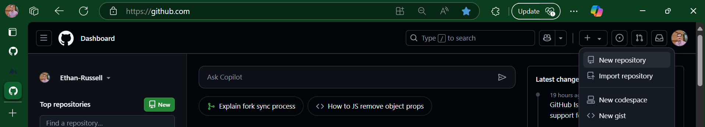
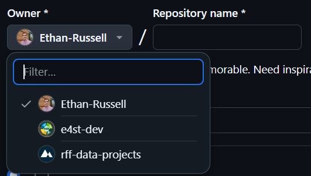

--- title: Example Git Branching --- gitGraph commit id: "initial commit" commit id: "starting point for the new feature" branch my-feature checkout main commit id: "ongoing development of main" checkout my-feature commit id: "trying new feature" commit id: "perfecting new feature" checkout main merge my-feature id: "now it is merged!" commit id: "continued development"
10 Tutorial
Before you begin this tutorial, make sure you have:
10.1 First Steps
10.1.1 Introduce Yourself to Git
First, open Git Bash. You can hit the windows key and type “bash” and it should pop up for you to open.
In the Git Bash window, you can type all kinds of commands, including Git commands, which are always prependended with “git”, or bash commands that are commonly run in terminals.
Let’s start with:
git --versionIt should have printed out what version you are running, something like git version 1.47.0.windows.2. Now, let’s introduce ourselves to Git:
git config --global user.name 'Your Name Here'
git config --global user.email 'your-name-here@rff.org'
git config --global --listNow, Git will include your name and email when you publish changes.
10.1.2 Creating a Repository in GitHub
This section is useful for learning, but you can also skip to the next section on cloning repositories if you already have a repository (i.e. for a project) that you’d like to clone.
- To create a repository hosted on GitHub, first navigate to github.com and click the plus button in the top right corner, then click the “new repository” button.

- Next, you may select who you would like to own the repository. It could either by owned by your user account, or an organization you are a member of. This may be something to discuss with your project team. The repository owner will show up in the URL of the repository, in the structure of:
https://github.com/<owner-name>/<repository-name>. For example, for theE4ST.jlrepo created in thee4st-devorganization, the URL is:https://github.com/e4st-dev/E4ST.jl. If in doubt, you can specify yourself as the owner, and change ownership later on. See the Workflows section on repository ownership for more information.

Now you must enter the repository name. We recommend all lowercase names with dashes separating words, like
my-repo-name. The only exception is when a programming language’s best practices prescribe a specific repository naming convention. (i.e. julia package repositories are supposed to be camelcase as inMyRepoName.jl)Now you must choose whether the repository is to be public or private. Generally, choose private for repositories that will contain sensitive information, and public if the project requires it to be public. It is easy to change from private to public later on, so when in doubt choose private. See the public/private section in Workflows for more information. If you have chosen to make your project public, you will need to also select which license to use. See the section on software licenses to help make this decision.
Check the box to add a README file. This will create a file called
README.mdlocated in the repository’s root folder, where you can add basic documentation for the repository.Optional: Choose a
.gitignoretemplate from the dropdown menu. A.gitignorefile specifies certain file types that Git will not track the changes of, by default. For example, it is best to ignore an auto-created config file made by R studio that is user-specific. Generally it is a good idea to select the .gitignore template for the programming language you will be using.Click the “Create Repository” button!! This should take you to the home page of your new repository.
10.1.3 Cloning Your First Repository with Git
Now that we’ve made a remote repository, let’s get it copied onto our computer. Copying a remote Git repository is called cloning. This process will work the same way for any existing repository, including the one that we made in the steps above.
First, it’s important to choose a good file location to store the git repository. While it’s not required, many people like to have a single folder to store all of their Git repositories. An alternative would be to store the Git repository in an associated project folder.
Git Bash has a working directory, which is the location that it is operating in. To see what the current working directory is, we can enter the pwd command, which stands for primary working directory.
pwdNow lets try changing the working directory with the cd command, to whatever directory you would like to store your Git repository in. For example:
cd 'C:/Users/<my-user-name>/OneDrive - rff/repos'
Note
It is only necessary to use quotes for filenames in bash if there is a space in the path, as in the example above.
Now, in an internet browser, navigate to the home page of the repository you wish to clone.
Click the button labeled < > Code, then copy the URL to clipboard by clicking the logo with intersecting squares.
In the Git bash window, type git clone then paste in the repository URL from your clipboard by right-clicking. Altogether this would look like:
git clone https://github.com/<owner-name>/<repository-name>If the repository is private, Git Bash may prompt you for your GitHub credentials. After entering them, you should be left with the cloned repository located in the working directory!
Note
If you have set up SSH keys as in the optional setup section, you can copy the SSH address for the repository. To do this, after clicking the < > Code button, select SSH before copying the URL to your clipboard. If properly set up, when cloning from an SSH URL, you should not be prompted for GitHub credentials, even for a private repository.
Finally, you can navigate into that newly created repo using the cd command:
cd <repository-name>10.1.4 Making and Publishing File Changes
Now that we have a Git repository on our computer, let’s explore the process of making file changes and saving versions. To give a conceptual outline, there are four steps.
- Pull changes from others. This is to ensure we are working on the latest version of the repository.
git pull - Make changes to files. You can do this with any text editor.
- Stage changes. This tells Git which changes you would like to select for the next version.
git add - Commit staged changes. This publishes any staged changes as a new version.
git commit - Push commit(s) to the remote/online repository.
git push
Let’s walk through that process together. In Git Bash, type git status to show the status of the repository. It should give you a short report about which branch you are on (more about branches later), whether your local copy is up to date with the remote copy, and any file changes you’ve made.
On branch main # this is the default branch
Your branch is up to date with 'origin/main'. # the local version matches the version in GitHub
nothing to commit, working tree clean # we haven't made file changesAt this point, it is ALWAYS a good idea to run the git pull command to make sure we are up to date with the latest version. This command first checks to see if the remote repository version (the version stored in GitHub) has had any commits since the last time we pushed or pulled. If there are any, it will download them incorporating those changes into your working version.
Now, let’s open up the README file and make some changes.
You can either navigate to the file in Windows File Explorer or type notepad README.md to open the README file in the notepad text editor. Add a few lines to your README, then save and close the file. In the future, you can use whatever editor you prefer, such as RStudio, MATLAB, Visual Studio Code, etc. After making that change, let’s type our git status command into Git Bash again.
On branch main
Your branch is up to date with 'origin/main'.
Changes not staged for commit:
(use "git add <file>..." to update what will be committed)
(use "git restore <file>..." to discard changes in working directory)
modified: README.md
no changes added to commit (use "git add" and/or "git commit -a")This message is telling us that there are some file changes that have not yet been staged for commit. Let’s stage the changes from the README file with the command git add README.md.
You can use the command git add -p in order to interactively select which files, and even sections of files you would like to stage for commit.
Now let’s check the status once more:
On branch main
Your branch is up to date with 'origin/main'.
Changes to be committed:
(use "git restore --staged <file>..." to unstage)
modified: README.mdNow, our README.md file is under the heading Changes to be committed, so it is ready to be published. Let’s publish with the command git commit. It should open up notepad and prompt you to enter a commit message. In the first line, enter a concise commit message describing the changes that you are publishing, more info on that here. Save and close the file, and you have successfully authored your first commit!
If you find typing your commit message in notepad arduous, we have the command for you!
git commit -m "Simply type your messsage here"OR if you want to be even more lazy, see the section for the commit alias
The last step is to push commits to the online repository. At this point, git status indicates that the local version of the repository is 1 commit ahead of the online version. To send the commits to the online repository, we will simply enter the command git push! Now, if you navigate to the online version of the repository in GitHub, you should be able to see the changes you made. Congratulations!!
10.1.5 Handling Conflicts
Have you ever been working on a Word document with another person, and maybe your computer gets disconnected, and you accidentally both edit the same paragraph? Usually Word will get smart and show both sets of changes and allow you to choose which one you would like. Sometimes, the same thing happens in Git/GitHub.
Say, for example, my collaborator pushes a commit to our project repository without me realizing. In an ideal world, I would run the git pull command to make sure I have that commit incorporated into my local copy. However, maybe I forgot to pull, or my collaborator pushed that commit as I was already making file changes. Then, I commit my changes and push them and am greeted with the following ugly message:
$ git push
To github.com:Ethan-Russell/MyTestRepo.jl.git
! [rejected] main -> main (fetch first)
error: failed to push some refs to 'github.com:Ethan-Russell/MyTestRepo.jl.git'
hint: Updates were rejected because the remote contains work that you do not
hint: have locally. This is usually caused by another repository pushing to
hint: the same ref. If you want to integrate the remote changes, use
hint: 'git pull' before pushing again.
hint: See the 'Note about fast-forwards' in 'git push --help' for details.Don’t panic! Git is built for this. This message is Git telling us that we can’t push because of the other commit, and it also tells us that the solution is to git pull before pushing again. When we run git pull, Git will try to automatically merge the changes for us. Ideally, if changes are made in separate sections of the file (or different files altogether), Git will be able to merge everything, and you can simply git push again to push your commit(s). However, if both versions have changed the same file, Git will flag it as a conflict and it will enter “MERGING” mode (denoted in git bash to the right of the prompt). This is the type of message Git will print if there is a conflict:
$ git pull
remote: Enumerating objects: 5, done.
remote: Counting objects: 100% (5/5), done.
remote: Compressing objects: 100% (2/2), done.
remote: Total 3 (delta 0), reused 0 (delta 0), pack-reused 0 (from 0)
Unpacking objects: 100% (3/3), 947 bytes | 55.00 KiB/s, done.
From github.com:Ethan-Russell/MyTestRepo.jl
6449e68..a3b9c32 main -> origin/main
Auto-merging README.md
CONFLICT (content): Merge conflict in README.md
Automatic merge failed; fix conflicts and then commit the result.Fortunately, Git has identified which file(s) have conflicts: in this case, only the README.md file has a conflict. So let’s open the file where there is a conflict. Git identifies which lines have conflicts by adding some helpful syntax, which we can search for to find the conflict. You can do a search for “====” and that will take you to the conflict:
<<<<<<< HEAD
# My Test Repo
=======
# MyTestRepo
>>>>>>> a3b9c323e36238db4a26a91addc5c699add04b6aGit will list the local version first, right after printing <<<<<<< HEAD, followed by a line of =======, then the version that was pulled in from the remote repository, then >>>>>>> and a unique identifier for the commit in the remote repository. Translating the above chunk of text, it looks like someone else had added the title MyTestRepo to the README.md file, and I added the title My Test Repo. All we need to do here is:
- Select which version of the changes we want (or we could edit it to be a combination of the two!)
- delete the other version, as well as all of the notation that Git has added (
<<<,===,>>>) - Save and commit the resulting file.
In the example above, I would change that portion of the file to be:
# MyTestRepoFinalNameAfter adding and committing that change, we can then safely run git push.
10.2 Branching
This is one of the most amazing features of Git. Git allows us to create different working versions, or branches of our repository. This lets me take a snapshot of the repository and try out a new idea without affecting my main branch. Then, once I (and all my collaborators) are satisfied with the changes in my new branch, we can merge it back into the main branch. This is how the majority of modern software is developed. It allows easy review of the portions of the code that have changed, and gives me confidence that my changes are not messing up the main branch until they are fully developed.
Here’s an overview of the process:
- Pull any code updates!
git pull - Create and check out a new branch with an appropriate branch name.
git branchandgit checkout - Make and push commits to the new branch.
git add,git commit, andgit push. - When ready to merge, create a Pull Request from GitHub.
- Review the Pull Request.
- Merge the Pull Request.
- Check out and pull main branch in Git Bash.
get checkoutandgit pull
10.2.1 Creating a Branch
You may have realized that Git creates a branch by default, called main. You could think of the main branch as the trunk of a tree. (If you encounter any older repositories, the default was the master branch, but the default was changed in mid-2020). You may notice that Git Bash has the branch name main written to the right of the prompt, which designates that main is the active branch, or the branch that is currently “checked out”.

To create a new branch, simply enter the command git branch <my-branch-name>. Generally, branch names should be: * concise yet descriptive. plot-results > plot-all-results-with-numpy * lowercase and hyphen-separated. plot-results rather than PlotResults or plot_results * no special characters (numbers, letters, and hyphens only) * See more info in the branch naming tip
You will notice that after running the git branch command, the main branch is still designated as the active branch. To work on the newly created branch, simply use the command git checkout <new-branch-name>.
After running that command, your new branch should be active.

Note
You can use the following command to create a new branch and check it out in one step:
git checkout -b <new-branch-name>Now that your new branch is active, you can safely make changes and commits to this branch without worrying about modifying the main branch. When you push the branch, Git will give you an error saying that there is no “upstream” branch for the branch you are pushing. You can simply run the command it gives you, i.e. git push --set-upstream origin <new-branch-name>, and it should push with no problems.
10.2.2 Merging a Branch
Creating a Pull Request
Once you have made some commits/changes and are ready to merge the new branch back into the main branch, now it is time to make a Pull Request in GitHub. To do that, navigate to the repository GitHub page, and click the “Pull requests” tab, shown below.

Now select the “New pull request” button at the top of the page. We want to select the main branch as the “base” branch, and our new branch as the “compare” branch, as shown below:

Now to finish creating the Pull Request, click the “Create pull request” button on the right side of the page. You may enter a title and description for the Pull Request, which is helpful for contributors to know what is contained in the Pull Request, and you could even include instructions for the contributors who you would like to review the Pull Request. Clicking the “Create pull request” button at the bottom will finish creating the request.
Reviewing and Merging a Pull Request
Pull requests provide a great opportunity for collaborators to review one anothers’ code, to ensure accuracy. Code review can be daunting, especially if there are only changes to specific parts of a larger codebase. GitHub makes this process very easy, by identifying lines of code that have changed, and allowing collaborators to comment on them.
To review a pull request, the reviewer would navigate to the Pull Request and click on the “files changed” tab. From there, they can see each of the lines added, changed, or deleted, and insert comments on particular lines of code. After reviewing all the files changed, they can complete their review and choose whether or not to approve the pull request. To learn more about reviewing Pull Requests, see the appropriate section of the GitHub documentation.
If the reviewer has requested changes to the code based on their review, you can simply make changes, commit, and push to the same branch, and the Pull Request will be updated with those changes. Once the Pull Request has been reviewed and approved, you can go back to the “Conversation” tab of the Pull Request and click the “Merge pull request” button at the bottom of the page, and your branch’s changes will be reflected in the main branch!
Conflicting Branches
Sometimes, when we try merging our new branch into the main branch, the Pull Request indicates that there have been changes made to the main branch that conflict with the changes in the new branch. When this happens, let’s go back to Git Bash and merge any new changes from the main branch into our branch, then resolve any potential conflicts. To do this, let’s pull updates to main and then merge main into our new branch by running the following commands:
git checkout main
git pull
git checkout <new-branch-name>
git merge mainTo handle these conflicts, use the process described in the Handling Conflicts section to resolve them.
Merging Branches without Pull Requests
Merging with a Pull Request may, at times, feel a bit unwieldy, especially if you are in a hurry or working on a project by yourself. It is still possible to merge into the main branch without making and reviewing a Pull Request. We just advise caution with this method because it does not facilitate easy review, and so could easily introduce mistakes into the main branch. If you are confident that the branch is ready to merge without additional review, in Git Bash, simply enter the following commands:
git checkout main
git pull
git merge <new-branch-name>If any conflicts come up, follow the instructions in the Handling Conflicts section. Once you have dealt with the conflicts (if any), you are done, and can push the main branch, which now has updates from your new branch.